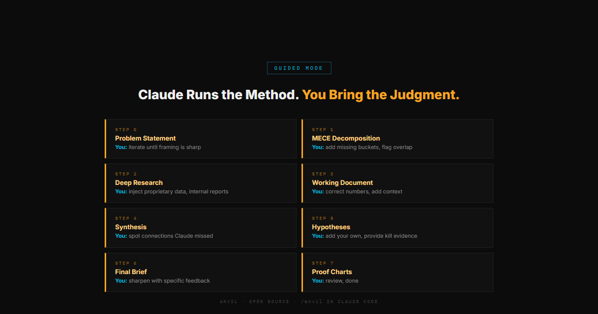
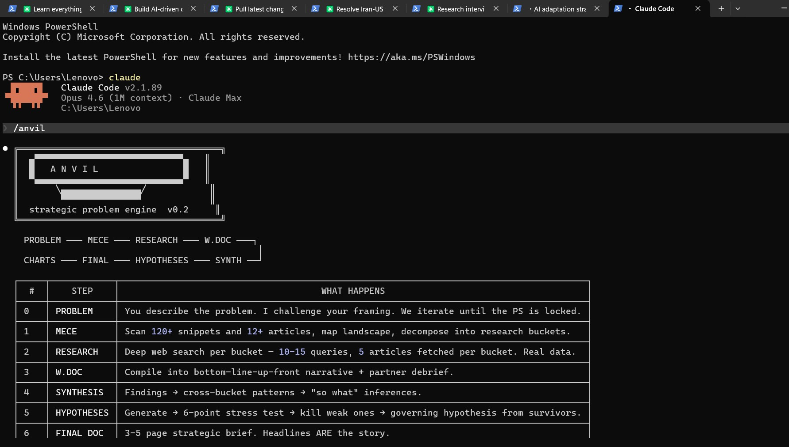

If you're a strategy professional who has felt the gap between what AI promises and what it actually delivers for real strategy work — this is an attempt to close it.
Claude pauses at every step. You review findings, inject proprietary data, challenge the framing, redirect the analysis. Claude holds the full context — you bring the judgment. Co-solve the problem together.
Claude runs end-to-end and narrates as it goes. You come back to a finished brief — 3-5 pages, sourced claims, proof charts, hypothesis graveyard. Good for speed.

A chatbot gives you one pass. Anvil gives you eight, each building on the last. A chatbot never tries to disprove itself. Anvil has a hypothesis graveyard. A chatbot doesn't tell you what it doesn't know. Anvil lists every data gap, names who can fill it, and says by when.
Get Anvil
Fill in your details and we'll send you the install instructions.
